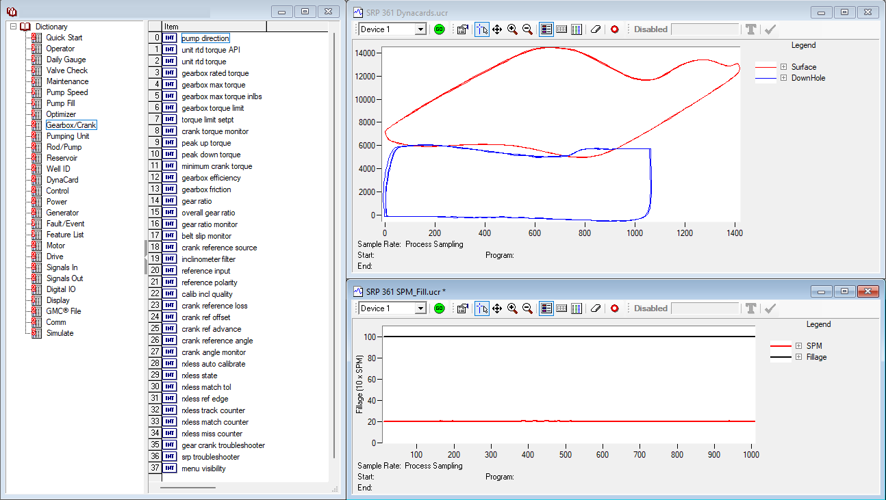
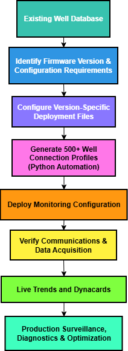
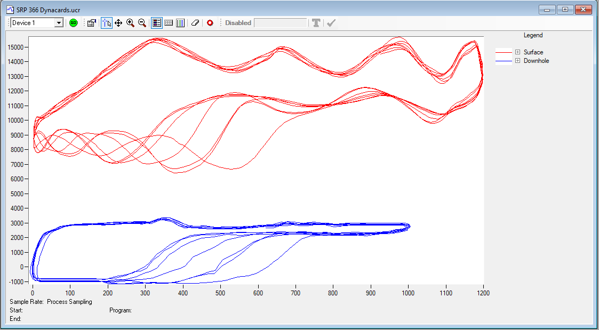

Digital Field Systems Project
Digital Well Monitoring Platform Deployment and Optimization
Implemented and scaled a real-time well monitoring platform across hundreds of producing wells by characterizing software functionality, automating deployment workflows, and developing operational best practices.
Monitoring Dashboard Example

Well data and information hidden for confidentiality.
Executive Summary
A new well monitoring platform was introduced to improve production surveillance and remote diagnostics across producing wells. Documentation was limited, implementation procedures did not exist, and software behaviour varied across multiple firmware versions.
I led the evaluation and deployment effort by mapping functionality across eight firmware versions, developing automated configuration tools, creating production monitoring programs, and establishing internal deployment standards.
Problem Statement
The organization was introducing a new production monitoring platform capable of collecting and visualizing real-time well data. However, several barriers prevented field-wide implementation.
- Documentation was limited.
- Firmware behavior was not fully understood.
- Standardized deployment procedures did not exist.
- Large-scale well configuration was impractical using manual methods.
Engineering Challenge
Technical Questions
- How does the software communicate with field equipment?
- What capabilities exist in each firmware version?
- How should wells be configured?
- What data can be collected and visualized?
Deployment Questions
- How can hundreds of wells be configured efficiently?
- How can deployment procedures be standardized?
- How can the platform be transitioned from pilot use to standard practice?
Configuration Standardization
Challenge
The monitoring platform existed across eight firmware versions that were functionally similar but required version-specific project files and data recorder configurations. Wells throughout the field could be operating on any firmware version, with no consistent relationship between firmware version, well type, or geographic location.
As a result, large-scale deployment required identifying the appropriate configuration files for each well and ensuring compatibility between firmware, project files, and data recorder settings.
Investigation
- Identified configuration requirements for all eight firmware versions.
- Documented project file and data recorder dependencies.
- Developed version-specific deployment procedures.
- Established standardized workflows for selecting and applying configurations.

Outcome
The resulting documentation and workflows eliminated trial-and-error deployment, reduced configuration errors, and enabled scalable implementation across hundreds of wells.
Deployment Automation
The absence of standardized deployment procedures created a significant administrative burden when configuring wells for the monitoring platform. In addition to generating connection profiles, each well required compatibility with the correct firmware-specific project and data recorder files.
To address this, I developed Python-based automation tools that generated and populated more than 500 well connection profiles while supporting version-specific configuration requirements.
8
Firmware Versions Mapped
500+
Well Connection Profiles Automated
Field-Wide
Deployment Workflow Standardized
Data Visualization Development
Live Production Trends
- Production rates
- Operating pressures
- Equipment performance
Dynacard Analysis
- Pump fillage
- Load behavior
- Diagnostic indicators
Example Applications
- Production surveillance
- Failure diagnosis
- Optimization reviews
Operational Use
Custom monitoring programs were developed to help engineers identify production changes and equipment behaviour that were difficult to interpret using traditional polling intervals.
Dynacard Monitoring Example

Diagnostic Value
Using the monitoring program, recurring pump-off behaviour could be observed directly from the well data. This type of behaviour can be difficult to identify using traditional SCADA workflows when dynacards are only collected at longer polling intervals.
Knowledge Transfer & Adoption
Following deployment, internal documentation and training materials were developed to support adoption.
- User training
- Procedure development
- Troubleshooting documentation
- Deployment standards
Adoption Outcome
The platform transitioned from a pilot implementation to an operational tool. Deployment procedures, configuration workflows, and training materials supported broader adoption across the team.
Technical Outcomes
- Mapped and documented eight firmware versions.
- Automated 500+ well connection profiles.
- Established standardized deployment procedures.
- Developed custom monitoring visualizations.
Organizational Outcomes
- Reduced deployment effort.
- Improved software adoption.
- Enabled real-time production surveillance.
- Created repeatable workflows for future deployments.
Technical Skills Demonstrated
Systems Engineering
- Software integration
- Communications architecture
- Digital field systems
- Configuration management
Programming
- Python automation
- Data processing
- Workflow automation
- Batch configuration
Production Engineering
- Dynacard analysis
- Production surveillance
- Well optimization
- Remote diagnostics
Leadership
- Technical training
- Documentation development
- Change management
- Operational implementation
Technical Stack
| Tool / Area | Purpose |
|---|---|
| Python | Automation of well connection profiles and configuration workflows |
| Digital Well Monitoring Platform | Real-time production surveillance and remote diagnostics |
| Firmware Configuration | Version-specific deployment and compatibility mapping |
| Production Engineering | Well performance interpretation and dynacard analysis |
| Technical Documentation | Training, troubleshooting, and implementation standards |
Project Impact
This project helped convert a software rollout with limited documentation into a repeatable deployment process supported by automation, standards, and training. The resulting workflow improved scalability and made the monitoring platform practical for use.
Data Disclaimer
Operational data shown in this project has been hidden, anonymized, or modified for portfolio presentation purposes. Engineering relationships, implementation approach, and technical methodology were preserved while removing proprietary operational details.